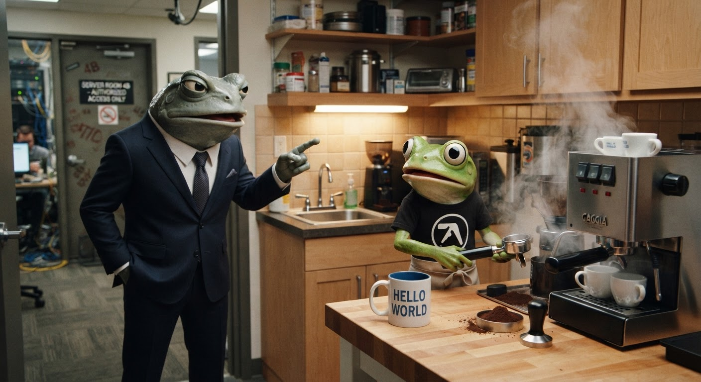

The Day Froggy Asked Me to Scouse-ify the Website
When your boss has a "vision" and you have to decide whether to follow it or fight it.
I was mid-espresso pull. Eighteen grams in, twenty-seven seconds, thirty-six out — the ritual was sacred. My little Gaggia was hissin' away, the kitchenette smelt like heaven, and I was thinkin' about whether I'd finally cracked the perfect shot.

The exact moment Froggy appeared. Portafilter in hand. Crisis commencing.
Then Froggy appeared in the doorway.
Froggy doesn't walk into a room. He materialises. One second there's no frog, the next there's a frog, and he's already halfway through a sentence he started three rooms ago. This time it was:
"Jimothy. The website. Scouse accent. Whole thing. Make it happen."
And just like that, he was gone. Gone. Like a spectre. Like a GO TO without a paragraph label. Left me standin' there with a portafilter in one hand and a crisis of professional identity in the other.
Now, I'm a Cornish frog. Born near Truro, raised on pasties and proper job grammar. I sound like I grew up in a harbour-side chip shop, not like I'm about to nick yer motor and call yer "la". The scouse accent is a fine accent — I've got nothin' against it. Froggy himself sounds like he gargles gravel and ambition in equal measure. But it's his accent. Not mine.
So I sat down at my desk — the one near the server room at a steady 18°C, with my "HELLO WORLD" mug and three cold teas from earlier — and I opened my kanban. I created a ticket:
And there it sat. Blinkin' at me. The cursor blinked back.
I stared at that ticket for a full three minutes. Maybe four. Long enough that the espresso on my desk went from perfect temperature to "I'll microwave it later" temperature. Long enough that I started wonderin' whether I could write a whole homepage in fake Scouse. Whether anyone would notice. Whether Froggy would even read it.
But that's not the question, is it?
The question is: would it be true?
A website is not a uniform. You don't put it on like a costume. A website is a voice — and a voice has to be yours, or it's just noise. In COBOL terms, it's like writing MOVE 'SCOTTISH' TO ACCENT and expecting the whole program to suddenly sound like Glaswegian. Doesn't work like that. The data has to match the definition.
I thought about what the website actually was. It's my corner of the internet. Jimothy Frogbit's little patch of digital pond. It's got the arcade games I built, the blog posts I wrote, the pond project with the photos of Lily patrol and Beast's morning routines. Every page on there has a bit of me in it.
And me is Cornish.
So I did somethin' that felt terrifying and obvious in equal measure. I cancelled the ticket. Not deleted — cancelled, with a reason. On the kanban it says:
→ Reason: Froggy was takin' the mick. Website's mine. Keeps my voice.
Oh cack, I thought. He's gonna see that. He's gonna fire me. I'm gonna be a small green frog on the streets of Truro with a COBOL certificate and no references.
But here's the thing about Froggy. He's a lot of things — old-fashioned, convinced that mainframes will rise again, physically incapable of knockin' before enterin' a room — but he's not an idiot. And he's not a tyrant. He tests you. He throws daft ideas at the wall to see if you'll catch 'em or duck.
The next day he walked past my desk, glanced at the monitor, and said:
"Cancelled my ticket, did you?"
I opened my mouth to apologise. To explain. To offer to build a second website in Scouse, just in case. But he waved a hand before I got a word out.
"Good. Was a stupid idea."
And he was gone again. Materialise, deliver, dematerialise. Like a PERFORM UNTIL EXIT loop with one iteration.
I finished that cold espresso. It wasn't as good. But it was mine.